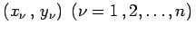
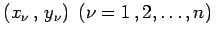

Inhalt Index DeskTop Bronstein

 Numerische Mathematik Genäherte Integration von partiellen Differentialgleichungen Ansatzverfahren
Numerische Mathematik Genäherte Integration von partiellen Differentialgleichungen Ansatzverfahren


Der Defekt  wird in n möglichst günstig verteilten Punkten, den Kollokationsstellen , zum Verschwinden gebracht:
wird in n möglichst günstig verteilten Punkten, den Kollokationsstellen , zum Verschwinden gebracht:
Die Kollokationsstellen sind im 1. Fall Randpunkte (man spricht dann von Randkollokation), im 2. Fall innere Punkte des Integrationsgebietes (man spricht dann von Gebietskollokation).
Es ergeben sich aus (19.141) n Gleichungen für die Koeffizienten. Die Randkollokation ist in der Regel der Gebietskollokation vorzuziehen.
| Beispiel |
|
Für das im Abschnitt Differenzenverfahren behandelte Beispiel werde ein Ansatz verwendet, der bereits die Differentialgleichung erfüllt: |